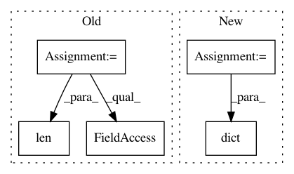

1ec0207376e3dcece97812f8ae40bc8d7ec9b208,stimulus_presentation/generate_spatial_gratings.py,,,#,25
Before Change
// next make an outlet
outlet = StreamOutlet(info)
trials = pd.read_csv("/home/hubert/Downloads/electrode-benchmark 2/stimulus.csv",
index_col=0)
start = time()
n_trials = len(trials)
record_duration = np.float32(options.duration)
// graphics
mywin = visual.Window([1920, 1080], monitor="testMonitor", units="deg",
fullscr=True)
grating = visual.GratingStim(win=mywin, mask="circle", size=40, sf=4)
fixation = visual.GratingStim(win=mywin, size=0.2, pos=[0, 0], sf=0,
rgb=[1, 0, 0])
rs = np.random.RandomState(42)
core.wait(2)
for ii, trial in trials.iterrows():
// onset
fre = trials["Frequency"].iloc[ii]
contrast = trials["Contrast"].iloc[ii]
ori = trials["Orientation"].iloc[ii]
grating.sf = 4 * fre + 0.1
grating.ori = ori
grating.contrast = contrast
grating.draw()
fixation.draw()
// Send marker
outlet.push_sample([fre + 1, contrast, ori], local_clock())
mywin.flip()
// offset
core.wait(trials["Duration"].iloc[ii])
fixation.draw()
outlet.push_sample([fre + 3, contrast, ori], local_clock())
mywin.flip()
After Change
record_duration = np.float32(options.duration)
// Setup trial list
frequency = np.random.binomial(1, 0.5, n_trials)
contrast = np.ones(n_trials, dtype=int)
orientation = np.random.randint(0, 4, n_trials) * 45
trials = pd.DataFrame(dict(frequency=frequency,
contrast=contrast,
orientation=orientation))
// graphics
mywin = visual.Window([1920, 1080], monitor="testMonitor", units="deg",
In pattern: SUPERPATTERN
Frequency: 3
Non-data size: 5
Instances
Project Name: alexandrebarachant/muse-lsl
Commit Name: 1ec0207376e3dcece97812f8ae40bc8d7ec9b208
Time: 2017-11-10
Author: hubert@interaxon.ca
File Name: stimulus_presentation/generate_spatial_gratings.py
Class Name:
Method Name:
Project Name: jazzband/django-debug-toolbar
Commit Name: 634bd0d68cb30d25705a049d46aa72e9a64e9dbd
Time: 2011-04-06
Author: rob@cogit8.org
File Name: debug_toolbar/panels/sql.py
Class Name: SQLDebugPanel
Method Name: __init__
Project Name: jazzband/django-debug-toolbar
Commit Name: d29f055713636c5629ddb7f48805536d39e550cb
Time: 2011-03-24
Author: dcramer@gmail.com
File Name: debug_toolbar/panels/sql.py
Class Name: SQLDebugPanel
Method Name: __init__